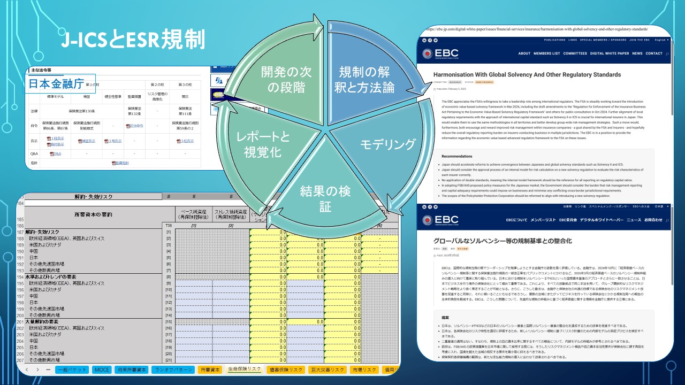

金融科技：保险业精算偿付模型建模
金融科技：保险业精算偿付模型建模
针对保险公司欧盟偿二代与经济资本风险管理框架要求，我们可以协助处理：
- 精算建模，数字可视化，数据分析
- 量化风险分散得益
- 精算计算流程优化
我们亦寻求机会把上述经验应用在保险业合规范畴，包括中国内地C-ROSS II，香港RBC，日本SOLVENCY等
客户案例
早前为香港一家跨国人寿保险公司提供经济资本建模与开发工作的咨询服务，包括以演算法为基础建立自动化的风险因数筛选与生成随机风险情景模拟，以得出监管要求的风险价值
洽谈程序
在项目实行前，本公司会提供免费概念验证（PoC），在确保可行性情况下才投入资源，以节省客户的时间与金钱成本。
欧盟偿付能力二代建模简例

日本偿付能力简例
